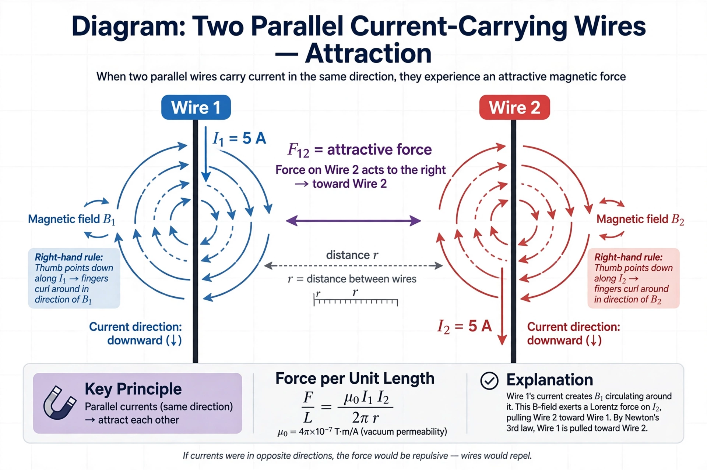

In magnetostatics, Ampère's force law describes the mechanical force of attraction or repulsion between two current-carrying conductors. It is named after André-Marie Ampère, who formulated it in 1820 on the basis of experiments with forces between wires.
| Ampère's force law | |
|---|---|
| Named after | André-Marie Ampère |
| Field | Electromagnetism |
| Key people | André-Marie Ampère |
The law states that the force per unit length between two straight, parallel conductors carrying currents I1 and I2 separated by distance d is proportional to the product of the currents and inversely proportional to the distance between them:
F/L = (μ0/2π) · (I1I2/d)
Currents in the same direction attract; currents in opposite directions repel. The original SI definition of the ampere (in force from 1948 to 2019) was based directly on this law: one ampere is the current which, in two parallel conductors one metre apart in vacuum, produces a force of 2 × 10−7 newtons per metre of length.
Following Ørsted's discovery in 1820 that electric currents deflect compass needles, Ampère began a series of experiments showing that currents exert forces on one another, presenting his results to the French Academy of Sciences in September 1820. He developed a general formula for the force between two current elements, which he published in his 1826 memoir widely regarded as the founding work of electrodynamics.
Ampère's original formulation gives the force between two infinitesimal current elements in terms of the currents, the distance between the elements, and the angles their connecting line makes with each element. Unlike the modern Biot–Savart-based expression, Ampère's law is symmetric between the two elements and satisfies Newton's third law in its strong form (action and reaction equal, opposite, and along the line joining the elements). The two forms give identical results for complete closed circuits.
Ampère's force law — recreated from memory.